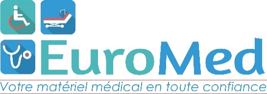

BON DE REPRISE
Document de reprise · EuroMed
📅 Date du jour

+33.327.64.34.99
www.euromed-materiel-medical.com
117 rue de Maubeuge F-59620 Aulnoye-Aymeries
PATIENT / CLIENT
MATÉRIEL REPRIS
Indiquez chaque matériel repris et son numéro de série ou de lot.
| Nom | Quantité | Dénomination du matériel repris | N° de série / lot | État |
|---|
Sur iPhone, faites glisser le tableau horizontalement pour voir toutes les colonnes.
MOTIF DE REPRISE
ÉTAT / OBSERVATIONS
RÉCEPTION DE LA REPRISE
Le matériel indiqué ci-dessus a été repris par EuroMed à la date indiquée sur le présent document.
SIGNATURES
Signature du patient / représentant
Signature du technicien EuroMed
Je soussigné(e), reconnais avoir remis à EuroMed le matériel indiqué sur le présent bon de reprise.